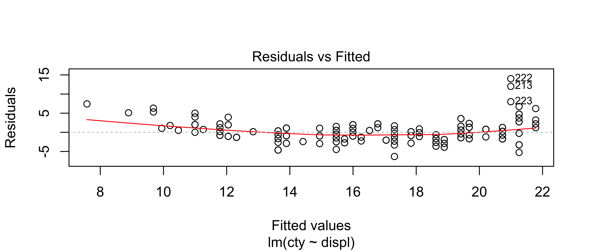
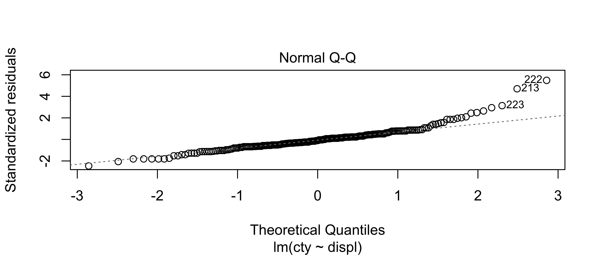
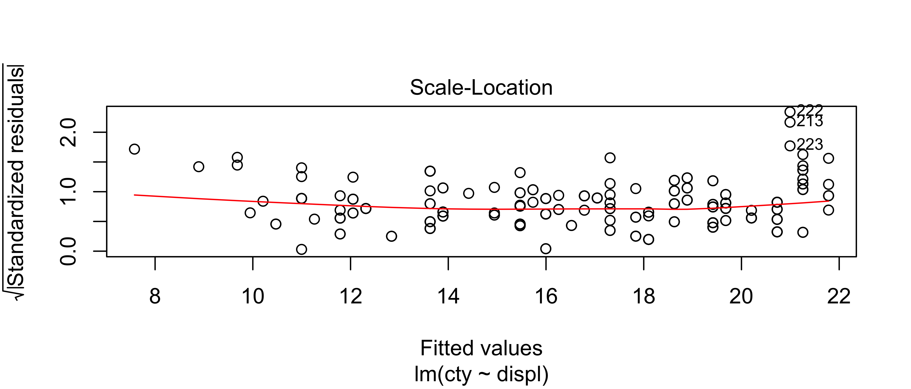
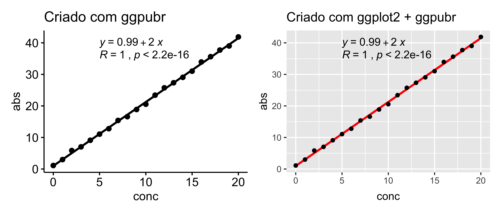
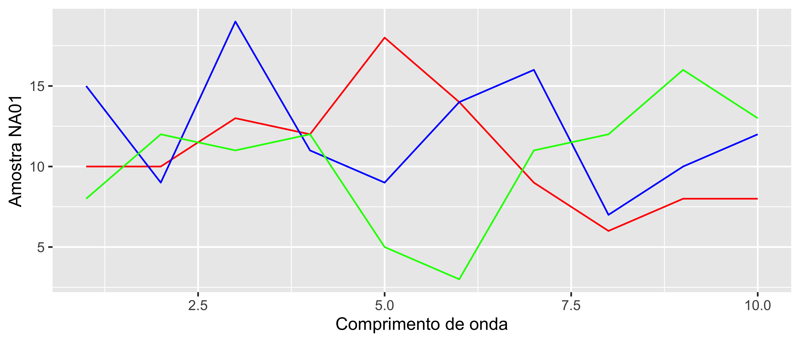
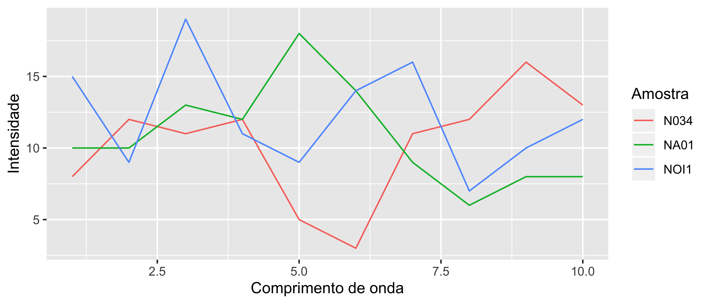
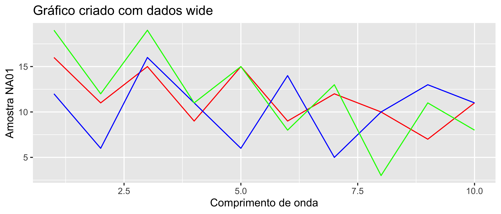
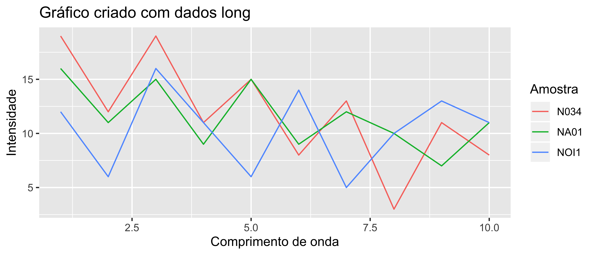

6.1 Regressões
Para criar modelos de regressão linear ou não linear no R precisamos usar uma tipo de objeto que tem a é da classe formula.
Esta classe é usada em várias funções de base do R mas também no pacote de criação de gráficos ggplot2::.
O que é essa classe formula: é um tipo de objeto que captura uma relacionamento simbólico entre variáveis, por exemplo:
- Tendo
xcomo uma variável independente eya variável dependente, para escrever \(y\) em função de \(x\) usamos a sytaxey ~ x, onde o operador~separa as variáveis.
Para modelos lineares esse é o mínimo que é necessário saber porém para mais informação sobre regressões com mais variáveis e modelos não lineares dê uma olhada neste link.
6.1.1 Regressões Lineares
No R para criar modelos lineares simples é usada a função lm().
Os principais argumentos são a formula e os dasos (data), você pode ler os outros argumentos usando rodando ?lm() no console.
Então para montar um modelo de regressão limples é apenas necessário ter um dataframe com uma coluna com os valores de x e uma coluna com os valores de y.
Iremos usar os dados do dataset mpg para criar exemplos.
Call:
lm(formula = cty ~ displ, data = mpg)
Coefficients:
(Intercept) displ
25.99 -2.63 [1] "lm"O resultado obtidos são o coeficientes de Intercept que é o coeficiente linear da reta e o outro coeficiente que tem o nome da variável é o coeficiente angular da reta.
A função print() mostra apenas estes valores mas podemos acessar mais valores do modelo usando outras funções ou métodos.
Observamos também que a classe do objeto fit que foi criado é lm, portanto qualquer função que tenha como acessar os dados contidos em objetos de classe lm podem ser usadas, por exemplo summary()
Call:
lm(formula = cty ~ displ, data = mpg)
Residuals:
Min 1Q Median 3Q Max
-6.3109 -1.4695 -0.2566 1.1087 14.0064
Coefficients:
Estimate Std. Error t value Pr(>|t|)
(Intercept) 25.9915 0.4821 53.91 <2e-16 ***
displ -2.6305 0.1302 -20.20 <2e-16 ***
---
Signif. codes: 0 '***' 0.001 '**' 0.01 '*' 0.05 '.' 0.1 ' ' 1
Residual standard error: 2.567 on 232 degrees of freedom
Multiple R-squared: 0.6376, Adjusted R-squared: 0.6361
F-statistic: 408.2 on 1 and 232 DF, p-value: < 2.2e-16Usando a função summary() obtemos vários valores que podem não ter muito significado quando o interesse é verificar o coeficiente de determinação (\(R^2\)) de um modelo, inclusive a função summary() retorna este valor mas também dados sobre a distribuição de residuais, erro dos coeficientes e outros valores estatísticos.
Inclusive podemos visualizar estes dados usando a função plot() de base que consegue gerar vários gráficos apenas com o objeto de classe lm.

Porém para o uso em questão isso não é extremamente relevante porque não estamos buscando avaliar a normalidade da distribuição e sim verificar se o modelo é adequado para uma curva de calibração.
Neste caso iremos gerar dados simulados para calcular um novo modelo:
# concentração de 0 a 20
conc <- 0:20
# absorbância é igual a 2x a concentração mais um valor entre 0,5 e 1
abs = 2 * conc + runif(n = length(conc), min = 0.5, max = 2)
calibracao <- data.frame(conc, abs)
calibracao conc abs
1 0 1.982326
2 1 2.721829
3 2 5.422521
4 3 7.360646
5 4 9.771787
6 5 11.860510
7 6 13.097058
8 7 15.577916
9 8 16.548146
10 9 19.506103
11 10 21.327512
12 11 23.142070
13 12 25.857850
14 13 26.516199
15 14 29.907887
16 15 31.446657
17 16 32.895977
18 17 35.633824
19 18 37.150200
20 19 38.770773
21 20 40.998026Com os dados gerados podemos gerar o modelo linear para os dados de calibracao.
Call:
lm(formula = abs ~ conc, data = calibracao)
Residuals:
Min 1Q Median 3Q Max
-0.79931 -0.28852 -0.00661 0.34808 0.67482
Coefficients:
Estimate Std. Error t value Pr(>|t|)
(Intercept) 1.49997 0.18867 7.95 1.84e-07 ***
conc 1.98094 0.01614 122.75 < 2e-16 ***
---
Signif. codes: 0 '***' 0.001 '**' 0.01 '*' 0.05 '.' 0.1 ' ' 1
Residual standard error: 0.4478 on 19 degrees of freedom
Multiple R-squared: 0.9987, Adjusted R-squared: 0.9987
F-statistic: 1.507e+04 on 1 and 19 DF, p-value: < 2.2e-16Como esperado, o coeficiente angular é de aproximadamente 2 e o coeficiente linear que deveria ser 0 é de 1.4999662.
Como todos os objetos, o objeto da classe lm possui uma estrutura.
Podemos ver esta estrutura usando a função str(), que retorna a estrutura completa dos objetos, porém de uma forma não muito fácil de entender
List of 12
$ coefficients : Named num [1:2] 1.5 1.98
..- attr(*, "names")= chr [1:2] "(Intercept)" "conc"
$ residuals : Named num [1:21] 0.4824 -0.7591 -0.0393 -0.0821 0.3481 ...
..- attr(*, "names")= chr [1:21] "1" "2" "3" "4" ...
$ effects : Named num [1:21] -97.6516 54.9687 0.0244 -0.0426 0.3635 ...
..- attr(*, "names")= chr [1:21] "(Intercept)" "conc" "" "" ...
$ rank : int 2
$ fitted.values: Named num [1:21] 1.5 3.48 5.46 7.44 9.42 ...
..- attr(*, "names")= chr [1:21] "1" "2" "3" "4" ...
$ assign : int [1:2] 0 1
$ qr :List of 5
..$ qr : num [1:21, 1:2] -4.583 0.218 0.218 0.218 0.218 ...
.. ..- attr(*, "dimnames")=List of 2
.. .. ..$ : chr [1:21] "1" "2" "3" "4" ...
.. .. ..$ : chr [1:2] "(Intercept)" "conc"
.. ..- attr(*, "assign")= int [1:2] 0 1
..$ qraux: num [1:2] 1.22 1.26
..$ pivot: int [1:2] 1 2
..$ tol : num 1e-07
..$ rank : int 2
..- attr(*, "class")= chr "qr"
$ df.residual : int 19
$ xlevels : Named list()
$ call : language lm(formula = abs ~ conc, data = calibracao)
$ terms :Classes 'terms', 'formula' language abs ~ conc
.. ..- attr(*, "variables")= language list(abs, conc)
.. ..- attr(*, "factors")= int [1:2, 1] 0 1
.. .. ..- attr(*, "dimnames")=List of 2
.. .. .. ..$ : chr [1:2] "abs" "conc"
.. .. .. ..$ : chr "conc"
.. ..- attr(*, "term.labels")= chr "conc"
.. ..- attr(*, "order")= int 1
.. ..- attr(*, "intercept")= int 1
.. ..- attr(*, "response")= int 1
.. ..- attr(*, ".Environment")=<environment: R_GlobalEnv>
.. ..- attr(*, "predvars")= language list(abs, conc)
.. ..- attr(*, "dataClasses")= Named chr [1:2] "numeric" "numeric"
.. .. ..- attr(*, "names")= chr [1:2] "abs" "conc"
$ model :'data.frame': 21 obs. of 2 variables:
..$ abs : num [1:21] 1.98 2.72 5.42 7.36 9.77 ...
..$ conc: int [1:21] 0 1 2 3 4 5 6 7 8 9 ...
..- attr(*, "terms")=Classes 'terms', 'formula' language abs ~ conc
.. .. ..- attr(*, "variables")= language list(abs, conc)
.. .. ..- attr(*, "factors")= int [1:2, 1] 0 1
.. .. .. ..- attr(*, "dimnames")=List of 2
.. .. .. .. ..$ : chr [1:2] "abs" "conc"
.. .. .. .. ..$ : chr "conc"
.. .. ..- attr(*, "term.labels")= chr "conc"
.. .. ..- attr(*, "order")= int 1
.. .. ..- attr(*, "intercept")= int 1
.. .. ..- attr(*, "response")= int 1
.. .. ..- attr(*, ".Environment")=<environment: R_GlobalEnv>
.. .. ..- attr(*, "predvars")= language list(abs, conc)
.. .. ..- attr(*, "dataClasses")= Named chr [1:2] "numeric" "numeric"
.. .. .. ..- attr(*, "names")= chr [1:2] "abs" "conc"
- attr(*, "class")= chr "lm"Mas o que podemos observar é que o objeto é uma lista com 12 elementos então podemos acessar estes elementos através de seus índices ou de seus nomes.
(Intercept) conc
1.499966 1.980936 1 2 3 4 5 6 7
0.482359703 -0.759073467 -0.039316641 -0.082127802 0.348077515 0.455864382 -0.288522907
8 9 10 11 12 13 14
0.211399100 -0.799307318 0.177713826 0.018187679 -0.148190512 0.586653401 -0.735933044
15 16 17 18 19 20 21
0.674818817 0.232653243 -0.298962856 0.457948878 -0.006610919 -0.366974424 -0.120656654 E para acessar elementos específicos destas listas usamos os operadores [ ]
(Intercept)
1.499966 conc
1.980936 [1] 1.499966[1] 1.980936[1] 0.9987405Claro que parece muito complicado ter que fazer tudo isso para extrair alguns dados e mesmo assim, existem várias formas de extraí-los o que causa muita confusão, portanto iremos explorar alguns métodos para extraír estes dados do objeto lm().
6.1.1.1 Método de função
É fundamental em qualquer linguagem de programação que se saiba escrever funções que facilitem seu trabalho e deixem o código mais simples. Neste documento não estão escritas necessariamente as melhores funções que são mais eficientes mas aquelas que funcionam para o que é desejado. Na grande maioria das vezes é melhor escrever uma função rápido do que escrever uma função que funcione rápido. Otimização de código não é a nossa prioridade agora.
Em outro capítulo será explorado a criação de funções melhor mas agora iremos apenas usar lógica para criar uma função que extraia os dados de coeficiente linear, angular, e \(R^2\) e coloque-os em um dataframe com os nomes e os valores usando a sintaxe já demonstrada.
extrair <- function(fit) { #fit é o argumento desta função
# cria variável que contém coeficiente linear
coef_lin <- fit$coefficients[[1]]
# cria variável que contém coeficiente angular
coef_ang <- fit$coefficients[[2]]
# cria variável que contém r quadrado
r_quadrado <- summary(fit)$r.squared
# cria dataframe com os dados em cada coluna
tabela <- data.frame(
"Coeficiente Linear" = coef_lin,
"Coeficiente Angular" = coef_ang,
"R quadrado" = r_quadrado
)
# pede para a função retornar o dataframe como output
return(tabela)
}
# usando função nos dados de calibração
extrair(fit_calib) Coeficiente.Linear Coeficiente.Angular R.quadrado
1 1.499966 1.980936 0.9987405 Coeficiente.Linear Coeficiente.Angular R.quadrado
1 25.99147 -2.630482 0.6376405Agora esta função pode ser usada sempe que se desejar extrair estes dados de um modelo linear criado com lm().
Não é a função mais robusta e alguns erros podem surgir quando tentando combinar ela com outras operações, mas para uma introdução funciona muito bem.
6.1.1.2 Método ggplot2
Um dos geoms do ggplot2 é o geom_smooth() que pode ser usado para plotar diversos modelos de regressão que não apenas lineares.
É suplementado pela camada stat_smooth() que tem mais funcionalidade e mais customização.
Para criar um gráfico com os pontos e a linha de regressão precisamos apenas dos dados de concentração e absorbância:
ggplot(calibracao,
aes(
x = conc,
y = abs
)) +
geom_point() +
# method = lm indica que quero representar um modelo linear,
# se = FALSE indica que não quero mostrar o erro padrão calculado
geom_smooth(method = "lm", se = FALSE, color = "red", formula = "y ~ x")
Porém o ggplot2 não inclui nada que nos permita adicionar a equação com os coeficientes e o \(R^2\) automaticamente portanto temos que adicionar individualmente usando os dados extraídos com a nossa função extrair().
Coeficiente.Linear Coeficiente.Angular R.quadrado
1 1.499966 1.980936 0.9987405ggplot(calibracao,
aes(
x = conc,
y = abs
)) +
geom_smooth(method = "lm", se = FALSE, color = "red", formula = "y ~ x") +
geom_point() +
annotate(geom = "text",
x = 5, # posição no eixo x
y = 40, # posição no eixo y
label = paste0("y = ", coefs$Coeficiente.Angular, "x + ", coefs$Coeficiente.Linear)) +
annotate(geom = "text",
x = 5, # posição no eixo x
y = 36, # posição no eixo y
label = paste0("R quadrado = ", coefs$R.quadrado))
Claro que agora temos um problema de números significativos em excesso e de formatação da equação e do \(R^2\).
Para resolver isso temos que usar a função format()para reduzir o número de dígitos significativos ou round() para arredondar e o argumento parse == TRUE para forçar o sobrescrito na camada de anotação.
ggplot(calibracao,
aes(
x = conc,
y = abs
)) +
geom_smooth(method = "lm", se = FALSE, color = "red", formula = "y ~ x") +
geom_point() +
annotate(geom = "text",
x = 5, # posição no eixo x
y = 40, # posição no eixo y
label = paste0("y = ", round(coefs$Coeficiente.Angular, digits = 3), "x + ", format(coefs$Coeficiente.Linear, digits = 2))) +
annotate(geom = "text",
x = 5, # posição no eixo x
y = 36, # posição no eixo y
label = paste0("R^2 ==", round(coefs$R.quadrado, digits = 4)) ,
parse = TRUE) # força a renderização do texto como uma expressão matemática
Claro que podemos escrever uma função usando as funções do ggplot para simplificar a construção destes gráficos, e esta pode ser uma alternativa viável mas outras pessoas já fizeram isso e publicaram pacotes justamente para atender esta necessidade.
6.1.1.3 Método ggpmisc
O pacote ggpmisc é uma extensão do ggplot que adiciona funcionalidades sobre o mesmo.
Com ele adicionar a equação e os coeficientes se torna muito mais simples.
library(ggpmisc)
ggplot(calibracao,
aes(
x = conc,
y = abs
)) +
geom_smooth(method = "lm", formula = "y ~ x", se = FALSE, color = "red") +
geom_point() +
# retirado da página do criador do pacote
# https://github.com/cran/ggpmisc
stat_poly_eq(aes(label = paste(..eq.label.., ..adj.rr.label.., sep = "~~~~")),
formula = "y~x", parse = TRUE)
Admito que não sei usar as funções deste pacote então recomendo que quem estiver lendo estas informaçõs busque outras fontes de conteúdo. A página do desenvolvedor contém várias informações e exemplos.
6.1.1.4 Método ggpubr
Provavelmente este é o método mais simples para gerar gráficos de regressão linear para uma curva de calibração.
O pacote é outra extensão do ggplot2 e foi feito para facilitar a construção de plots comuns no meio científico.
A página possui vários exemplos e a documentação necessária para criação dos gráficos.
O ggpubr é uma ferramenta que facilita bastante o uso do R para construção de gráficos, porém com algumas desvantagens e limitaçòes de customização.
A sintaxe é um pouco diferente do ggplot mas similar o suficiente para não criar uma barreira para o usuário.
library(ggpubr)
ggpubr <- ggscatter(calibracao,
x = "conc",
y = "abs",
add = "reg.line") +
stat_cor(label.x = 5, label.y = 36) +
stat_regline_equation(label.x = 5, label.y = 40) +
ggtitle("Criado com ggpubr")
ggpubr
Alternativamente as funções do ggpubr podem ser usadas em plots criados com o ggplot2 porque os objetos criados pelos dois tem compatibilidades.
gg <- ggplot(calibracao,
aes(
x = conc,
y = abs
)) +
geom_smooth(method = "lm", se = FALSE, color = "red", formula = "y ~ x") +
geom_point() +
stat_cor(label.x = 5, label.y = 36) +
stat_regline_equation(label.x = 5, label.y = 40) +
ggtitle("Criado com ggplot2 + ggpubr")
# usando patchwork
ggpubr + gg`geom_smooth()` using formula 'y ~ x'
Existe uma infinidade de formas de mostrar estes dados, o importante é achar a forma que melhor atende suas necessidades e que seja o mais fácil criar.